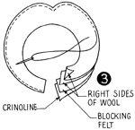
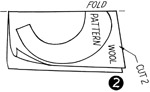
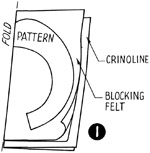
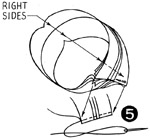
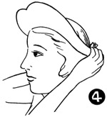
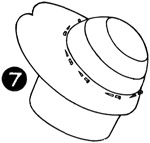
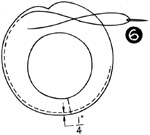
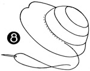
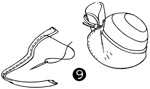

1952—How to Make Hats
by Ruby Carnahan
Plain Brim Fabric Hat
MAKING BRIM
Lay brim pattern on crinoline and blocking felt. Cut out one of each, (Illus. 1). Lay brim pattern on wool material and cut out two brims, one for top of brim and one for facing brim, (Illus. 2). Place wool brims right sides together and baste around outer edge to crinoline and felt brims and stitch, (Illus. 3).
Fit brim to head and pin ends of brim together in back, (Illus. 4). Stitch and steam press seam open, (Illus. 5). Turn one side of wool brim over and baste 1/4" from top all around brim edge, (Illus. 6).
Steam press brim. Pull brim over wool crown on block and pin together around headsize, (Illus. 7).
Try hat on and make any adjustments necessary. Sew crown and brim together, (Illus. 8). Cut off any excess material around headsize.
Make hat lining to match bag lining and finish with ribbon headband.
TRIM WITH A COVERED BICYCLE CLIP
Stitch two pieces of ribbon together. Slip bicycle clip in groove and adjust for hat trim, (Illus. 9).